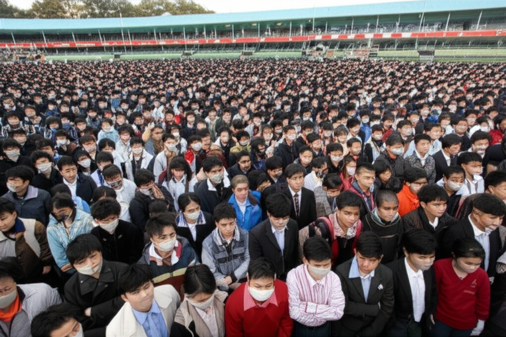

本文整理了近期網路新聞摘要，涵蓋科技、地方新聞、教育、產業經濟、健康、國際關係及社會議題等多個面向，旨在提供一個快速了解近期熱點事件的管道，並進行簡單的分析。
三星台灣官方網站的新聞消息顯示，其持續更新產品線和提供使用者服務。特別提到 Buds 控制器與部分 Galaxy Buds 和 Watch 系列的相容性，顯示三星積極擴展其生態系統，並提升使用者體驗。
台灣風電大廠因訂單掛零宣布裁員470人，警示風電國產化政策可能面臨挑戰。丹麥 Vestas 退出台灣市場的消息，更增添了該產業的不確定性。這也反映了在推動綠色能源轉型時，產業政策的制定與執行必須更謹慎。
一則 YouTube 影片討論解放軍攻佔台灣的可能性，以及台灣學生在國際場合的演講如何引起關注。這凸顯了台灣海峽局勢的敏感性，以及台灣在國際舞台上發聲的重要性。
本次新聞摘要呈現了多元化的社會議題，從科技產品更新到國際人道危機，從產業發展挑戰到個人健康管理，每一則新聞都反映了當前社會所面臨的各種挑戰與機遇。持續關注這些議題，有助於我們更全面地理解世界，並做出更明智的判斷。